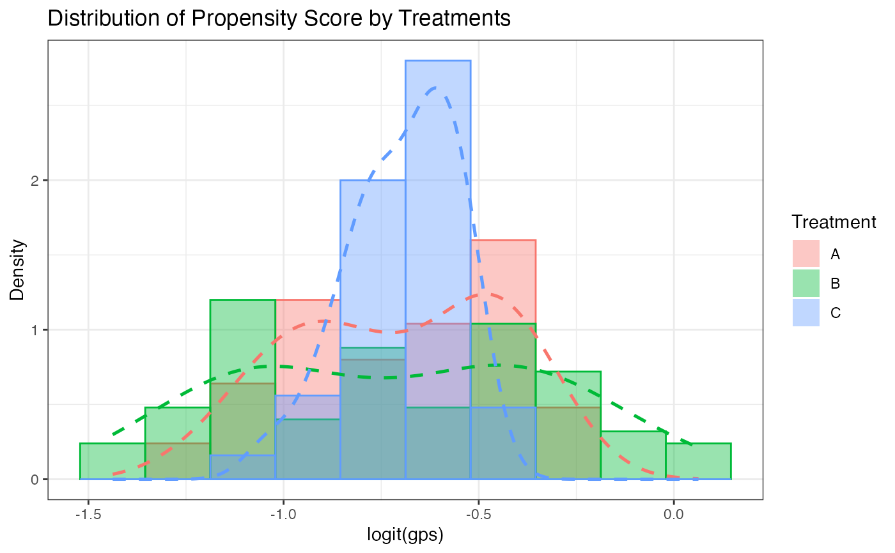

Plot overlaid histograms of non-crossfitted diagnostic GPS
Source:R/gps_histogram.R
gps_histogram.RdPlot overlaid histograms of non-crossfitted diagnostic GPS
Arguments
- data
Data frame returned by
gps_pre_process()(must containgps_columns)- bins
Number of histogram bins (default = 30)
- palette
Character vector of fill colors (recycled if shorter than the number of GPS columns)
- alpha
Fill transparency (0–1, default = 0.4) for overlapping areas
- eps
Small value to truncate probabilities (avoids Inf after logit; default = 1e-6)
Examples
set.seed(1)
n <- 75
dat <- data.frame(
trt = factor(rep(c("A", "B", "C"), each = 25)),
x1 = rnorm(n),
x2 = runif(n)
)
gps_dat <- gps_pre_process(
data = dat,
treatment = 1,
treatment_ref = "A",
covariate = 2:3,
gps_model = "logit"
)
gps_histogram(gps_dat, bins = 10)
